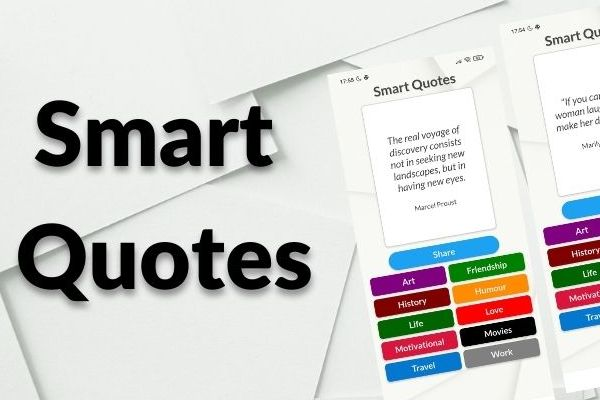
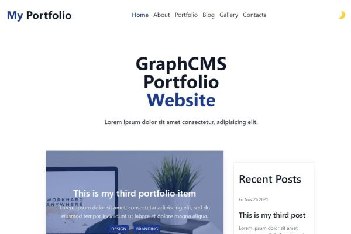

About Me
My story is a little bit unusual. I took a degree in Mechanical Engineer, but
after one year working, at Politecnico di Torino as researcher worked in Fiat
Auto, then FCA Group as a project chief. In 2014 I resigned and started to work
as a freelance in the theatral field. This was a passion that gradually became
my main activity. As actor but also as a trainer in different companies and
associations. In particular improvisatioal theatre is useful to team-bulding
activities and more. Then in 2020, due to the covid pandemic, suddendly all was
stopped. Then, to do not waste my time for months, I decided to dedicate myself
to something that would have been possible online. So I reviewd my past basics
in informatics and I decided to follow a web development road map. I began
studying Html, CSS and Javasript. I explored many another aspect both back-end
and front-end but then after a period working on Wordpress togheter with the
basics of Php I concentrated myself on front-end development, adding React and
Next.js and exploring Tailwind CSS, Material UI and more regarding CSS framework
and SanityIO and GraphCMS as headless CMS.
Main topics covered
My Projects
Following you can find some of my projects. I put different kind of works
related to Wordpress, PHP, Vanilla Javasript (as this portfolio itself), React
and React Native and Next.js. Some of them are in production, some other are
simply a demo. They are all quite simple, I know, but each one of them helped me
to understand the basis of all these languages and framework I mentioned before.
These projects are deployed on Vercel, Netlify, Aruba Server or on Google Play
Store. In this way a faced different kind of way to deploy an app or a website
with different confgurations.
 wordpressphp
wordpressphp
This is the website of my theatral Company. I did it in 2020 for our 10 years
of activity. To make it, I've used Wordpress with some customization through
PHP, CSS and HTML in order to avoid paying for some theme or plugin.
Read More

react nativereact
This is a simple random quote generator I've made using React Native with
Expo. It's available on Play Store. This is my first project after learning
the basis of React Native. I've choosen some of my favorite categories and
quotes from different websites.
Read More

next.jsgraphCMStailwind
This Portfolio has been made with Next.js, GraphCMS as headleass CMS using
graphql-request, Tailwind for styling. This portfolio make use of
getStaticProps to make a static generation in combination with useSWR. There
is a searcbar that allow you to find a searcterm inside a Blog Title. There is
also a simple pagination. These features use GraphQL query. This project has
been useful to manage GraphQL instead of a Rest API.
Read More
 reactapp
reactapp
This is a React App. It's a simple quiz about Turin which is my hometown. I
started this app using CRA and then I deployed it on Netlify connecting this
my
repository on GitHub . This quiz consists of 10 questions with a different final result based on
the number of correct answers.
Read More
>